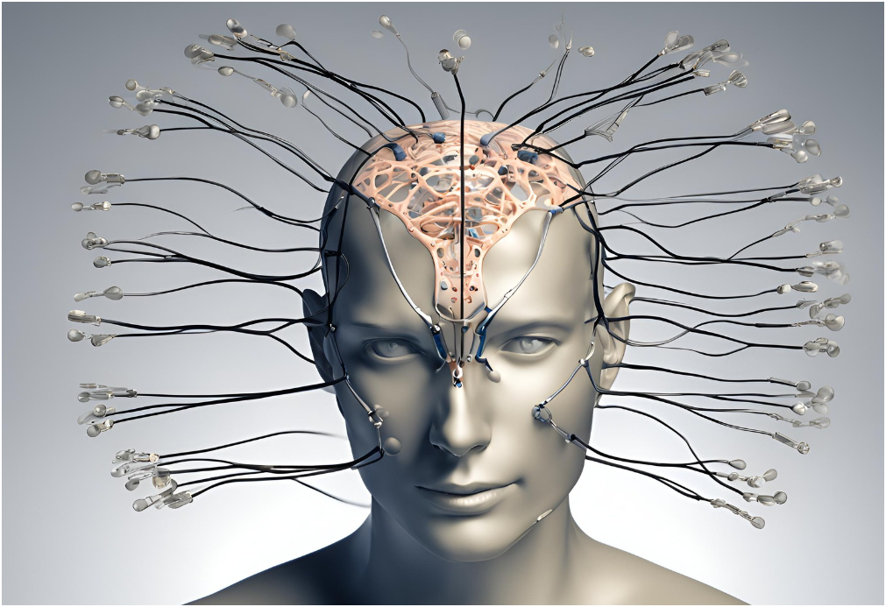

In the realm of neuroscience and technology, recent breakthroughs in neural interfaces are paving the way for revolutionary advancements that bridge the gap between the human brain and machines. These innovations hold promise for transforming healthcare, rehabilitation, communication, and even the way we interact with technology in our daily lives.
Understanding Neural Interfaces
Neural interfaces, also known as brain-computer interfaces (BCIs), are communication systems that enable direct interaction between the brain and external devices. These interfaces interpret neural signals from the brain and translate them into commands that can control prosthetic limbs, computers, or other devices. The ultimate goal is to create seamless interactions where thoughts alone can trigger actions.
Recent Technological Advances
Recent years have witnessed significant strides in neural interface technology:
- High-Resolution Electrodes: Researchers have developed electrodes capable of recording neural activity with unprecedented precision.
- Wireless and Implantable Devices: Advances in materials science and miniaturization have led to the development of wireless and implantable neural interfaces.
- Machine Learning and AI: Integration of machine learning algorithms has enhanced the capabilities of neural interfaces.

Applications in Healthcare and Rehabilitation
Neural interfaces hold immense potential in healthcare and rehabilitation:
- Prosthetics: Advanced BCIs allow amputees to control prosthetic limbs with natural movements and receive sensory feedback.
- Neurorehabilitation: BCIs assist in stroke rehabilitation, helping patients regain motor functions through targeted brain stimulation.
- Communication: BCIs offer a means to communicate and interact with the world for individuals with severe motor disabilities.
Ethical and Societal Implications
As neural interface technology progresses, ethical considerations become increasingly important:
- Privacy and Security: Protecting neural data and ensuring secure communication.
- Informed Consent: Addressing ethical concerns related to invasive procedures.
- Equity and Accessibility: Making advanced neural technologies accessible to all individuals.
Future Directions
Looking ahead, researchers are exploring new frontiers in neural interface technology:
- Mind-Machine Integration: Achieving seamless integration where neural interfaces become natural extensions of human capabilities.
- Neuroprosthetics: Developing bi-directional interfaces that provide sensory feedback to the brain.
- Brain-Internet Connectivity: Envisioning direct brain activity interface with the internet.
Conclusion
Breakthroughs in neural interfaces represent a paradigm shift in our relationship with technology, offering unprecedented opportunities to enhance human capabilities and quality of life. Embracing these advancements responsibly and ethically will be crucial as we navigate the transformative impact of neural interface technology in the years to come.